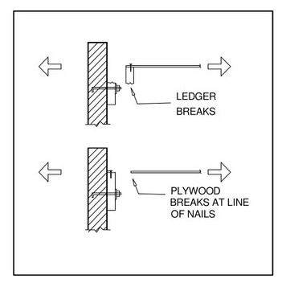
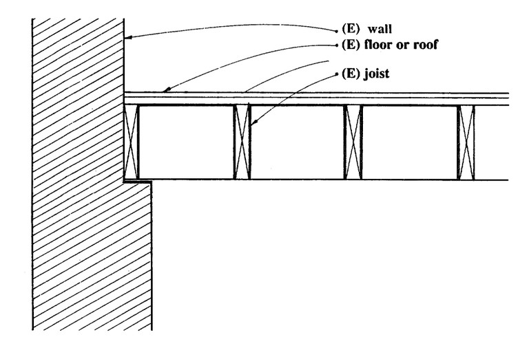
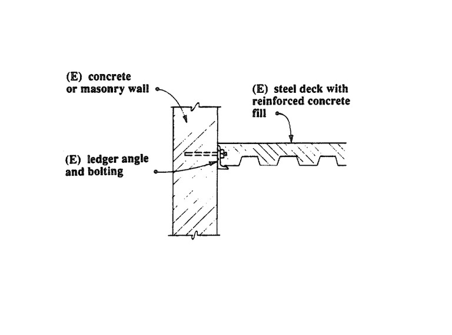
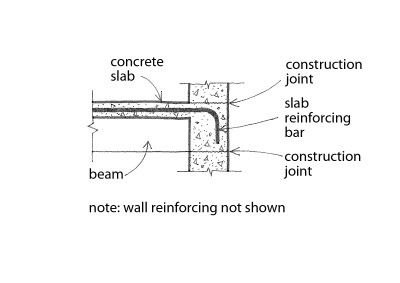
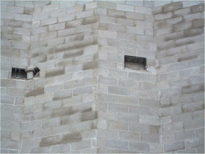
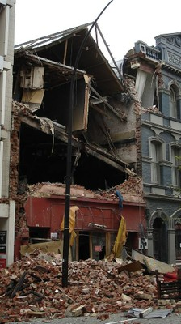

Floor-wall diaphragm connection not provided [FWCN]
There are no connections between the floor diaphragm(s) and the walls that are capable of transferring in-plane forces from roof to wall and restraining outward displacements of walls.

Inadequate wooden floor-to-wall connection (FEMA 310, 1998)

Example of wall-to-floor connections of a wood diaphragm, that may be inadequate (adapted from FEMA 172, 1992)

Example of connections of a composite concrete slab and steel deck diaphragm to a concrete or masonry wall, that may be inadequate (adapted from FEMA 172, 1992)

Cast-in-place reinforced concrete floor supported by concrete wall. The connection may not be adequate if construction joints are not able to transfer lateral loads across the interface.

Floor-wall diaphragm connections between steel trusses (known as Open Web Steel Joists in North America) and masonry walls may be inadequate if support provided by the wall is not adequately designed and/or constructed (J. Adams)

Support for hollow concrete slabs provided by masonry walls may be inadequate (J. Adams)

Inadequate support for precast concrete hollow floor slabs provided by supporting beams contributed to building collapse in the 2008 Wenchuan, China earthquake (J. Dai)

Out-of-plane wall collapse was reported in some unreinforced masonry buildings due to the 2011 Christchurch, New Zealand earthquake; the building shown on the photo had inadequate floor-wall connections (K. Elwood)